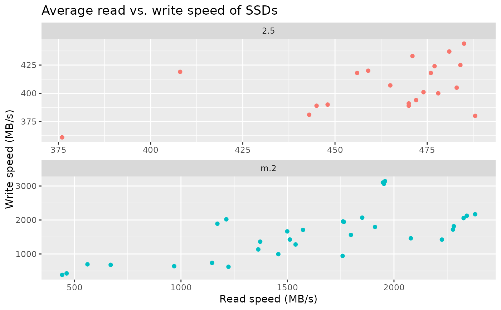

User submitted data on 1TB solid state drives (SSD). Compiled from data available on UserBenchmark on September 1, 2020.
ssd_speed
A data frame with 54 rows and 7 variables.
Brand name of the drive.
Model name of the drive.
Number of user submitted benchmarks.
Physical form of the drive with levels 2.5, m.2, and mSATA.
If a drive uses the nvme protocol this value is 1, 0 if it does not.
Average read speed from user benchmarks in MB/s.
Average write speed from user benchmarks in MB/s.
#> # A tibble: 3 x 2 #> form_factor n #> * <chr> <int> #> 1 2.5 21 #> 2 m.2 32 #> 3 mSATA 1ssd_speed %>% filter(form_factor != "mSATA") %>% ggplot(aes(x = read, y = write, color = form_factor))+ geom_point()+ labs( title = "Average read vs. write speed of SSDs", x = "Read speed (MB/s)", y = "Write speed (MB/s)" ) + facet_wrap(~form_factor, ncol = 1, scales = "free") + guides(color = FALSE)